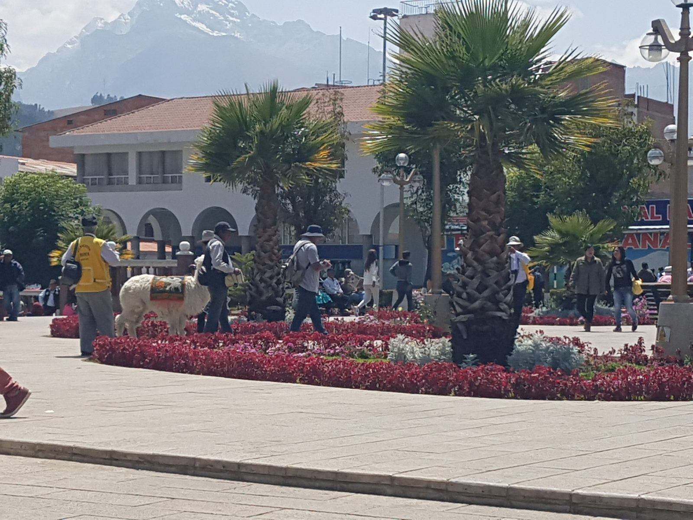

South America · Peru · Huaraz
Huaraz, September 2017
Getting to Huaraz
I took a night bus from Lima. It was a tough ride. If I did it again, I would do this leg road-trip style instead.
Checked, November 2026: a September 2025 guide quotes about 85 soles (around $25) and 8 to 9 hours from Lima, and recommends the night bus because it saves a night of accommodation (Indie Traveller). CheckMyBus lists lower fares, so expect prices to vary by company and seat. The bus terminal in Huaraz is about a 15-minute walk from the main plaza, and taxis are available.
Friday, September 22: arriving
My first photos of Huaraz are from Friday, September 22, 2017. The city sits at roughly 3,050 to 3,100 metres. I felt no altitude problems. That is one person's experience, so do not treat it as a promise: the guides I checked suggest spending a day or two in town before any big hike, drinking plenty of water and avoiding alcohol at first.

The days
- Friday, September 22: arrival and the town.
- Saturday, September 23: a full-day trip to the Pastoruri glacier. Read that chapter.
- Sunday, September 24: in town. My photos from that day are only of the city.
- Monday, September 25: Laguna Parón. That chapter is coming.
Where I stayed
I do not remember the name of my hostel, so I will not guess. Instead, here is what looks good today. These are places I did not stay in, listed from Booking.com with the lowest "from" price per night for two adults, as shown for November and December 2026, so check the date you need:
- Tony's House Eco Hostel: guest score 9.6 (89 reviews), from about $14.90.
- Artesonraju Hostel: 9.0 (136 reviews), from about $14.
- Yerupaja Mountain Hostel: 9.1 (485 reviews), from about $16.
- Krusty Hostel B&B: 8.7 (919 reviews), from about $24.20, with a rooftop terrace, breakfast and an in-house tour agency.
Source: Booking.com hostels in Huaraz, checked November 2026. Scores and prices change daily.
Why many people come here: the Huayhuash trek
Huaraz is the base for the Cordillera Huayhuash circuit, one of the best-known multi-day treks in Peru. I did not do it: my time here was day trips. Everything in this section is researched, not first-hand, and checked in November 2026.
Length: the classic loop is usually described as 8 to 12 days and about 100 km, with shorter 4 to 5 day "mini" versions (Travel Made Me Do It, 10Adventures, July 2026).
Altitude: you cross a pass above 4,600 m every day, reaching about 5,000 m, and camp around 4,200 m. Nights can be below freezing.
Season: May to September is the usual window, with June to August the driest and busiest. Avoid December to February, when rain can make the passes dangerous.
Getting to the start: a 2022 guide describes a direct bus from Huaraz to Llamac of about 5 hours, or a bus to Chiquián and a change to Llamac. Check the current departures locally.
Costs
- Community fees: there is no national park fee, but each community charges at its checkpoint. In mid-2022 these added up to 270 soles per person (Llamac 50, Pocpa 20, Mitucocha 40, Carhuacocha 40, Huayhuash 40, Huayllapa 50, Jahuacocha 30). I could not find 2026 amounts, so confirm them with your operator. Guided tours normally include them.
- Guided trek: prices differ enormously. A 2022 guide listed an 8-day group trek at $300 per person, while a July 2026 guide quotes $1,000 to $5,000 depending on group size, dates and comfort. Ask for a written quote that says exactly what is included.
- Independent trek: about $100 for transport and camping fees, plus your own food, according to 10Adventures. A guide is not mandatory, but the sources advise going independently only if you are experienced at altitude and good at navigation, with a GPS and offline maps.
Tips from the guides I checked
- Spend at least 2 to 3 days in Huaraz first. Warm-up hikes mentioned include Laguna Wilcacocha (3,710 m), Laguna Shallap (4,250 m) and Laguna Churup (4,450 m).
- Gain height slowly, drink plenty of water, and tell your guide or companions at once if you get a headache with nausea or dizziness. Do not go higher while symptoms last.
- Filter or boil all water. Bring a warm sleeping bag and layers. Ask your doctor about altitude medication before you travel.
- The trek has had security problems in the past. A 2022 guide calls it generally very safe today, but check recent reports before you go.
Sources: Travel Made Me Do It (published August 2022, prices from mid-2022), 10Adventures (July 2026) and Explorandes (November 11, 2026).
Agencies, and what I would do differently
I reached the sights through agencies, which is the normal way. Huaraz is a tourist town, and the streets are full of them. They also sell the famous multi-day Huayhuash trek, which I did not do (see the section above).
If I went again, I would do as much as possible independently. Laguna Parón is the clearest example: according to a guide updated in March 2024, you can do it with shared colectivos at around 10 soles per leg, a direct colectivo is about 45 soles, and the park entry is 5 soles (Travel Made Me Do It). Pastoruri is harder: the guide I checked says there is no public transport to the glacier area, so you need a tour or a private taxi (Laid Back Trip).
Park tickets (Huascarán National Park) for foreigners were listed in 2026 at 30 soles for one day, 60 for two to three days and 150 for four to thirty days. The page says the amounts are indicative, so confirm at the gate (Trámites Perú, updated July 29, 2026).
From 2026, Laguna 69 and Nevado Pisco, in the Llanganuco sector, can only be visited through authorised operators, according to the park chief (Caretas, February 25, 2026). I did not go to either.
Next: Pastoruri glacier. Previous: Lima.